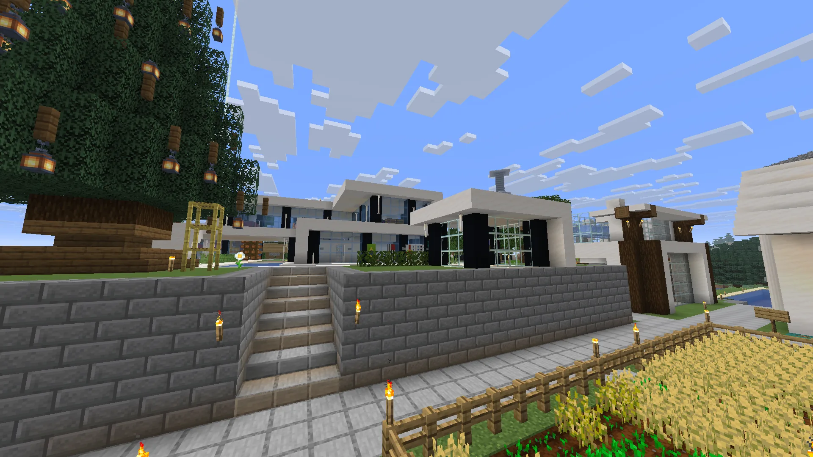

Tem construção que só faz sentido quando a gente visita junto.

Seu servidor Minecraft, novos mundos para explorar e um lugar para manter a conversa. Tudo na Força Aliada.
Explorar e participar é grátis. O Manager faz parte da assinatura.
Crie, conecte e cuide do seu servidor. Pelo aplicativo ou de onde você estiver.
Conhecer o Manager Windows · PC ligado para hospedar
Encontre servidores, escolha uma skin ou dê uma página ao seu próprio mundo.
Explorar Minecraft Catálogo e página básica gratuitosCompartilhe o que você anda criando. Encontre amigos e acompanhe suas comunidades.
Abrir o Community Perfis, publicações e mensagensTem construção que só faz sentido quando a gente visita junto.

Comece jogando, criando ou compartilhando.
A mesma conta acompanha você.
Do primeiro mundo às rotinas de backup. O Manager reúne o que você precisa para cuidar do servidor.
Ver o aplicativoEscolha quando fazer o backup. O Manager cuida da rotina enquanto o computador está ligado.
O Manager para o seu servidor. Mais personalidade para suas páginas e seu perfil. Tudo na mesma conta Força Aliada.
Para seu servidor e uma equipe pequena.
Mais mundos. Mais gente criando junto.
O servidor roda no seu computador, que precisa estar ligado e conectado. Valores e condições confirmados na contratação.
No servidor Força Aliada, usamos e colocamos à prova as ferramentas que desenvolvemos. Um mundo construído em comunidade desde 2021.
Conhecer nosso servidorÉ uma plataforma com ferramentas para criar servidores e conectar comunidades. Hoje, você encontra o Manager, o catálogo Minecraft com servidores e skins, e o Community. O servidor próprio é parte dessa história — a Força Aliada vai além dele.
Não. Você pode explorar o catálogo, usar skins e ferramentas, criar uma página básica de servidor e participar do Community sem assinatura. Pro e Team incluem o Manager e benefícios adicionais. Cada servidor pode ter suas próprias regras de entrada.
Não. O Manager roda no seu PC Windows, que precisa ficar ligado e conectado à internet. Ele reúne a administração, oferece um endereço público protegido e permite acesso ao console pelo navegador. O desempenho depende do computador, da conexão e da configuração do servidor.
Sim. A conta Força Aliada acompanha você no Manager, no Community e no catálogo. A conta Microsoft pode ser conectada para recursos do Minecraft, como importar e aplicar sua skin Java. Ela não é substituída pela conta Força Aliada.
Os dois incluem o aplicativo, o console e os benefícios pessoais. Pro permite até 2 servidores e 3 pessoas na equipe; Team, até 5 servidores e 10 pessoas. Confira a comparação e as condições dos planos.